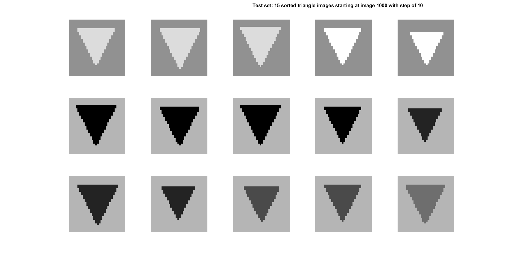
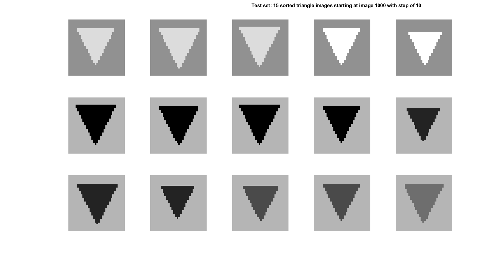

Contents
parameters
load the MAT test shapes and their labels
Loaded 5000 test images
define BG and FG points
see the comments of issue #9: https://github.com/NLeSC/XAI/issues/9
sort the images on BG and then on FG gray values per shape
Sorted 5000 test images by contrast
visualizaiton

 
